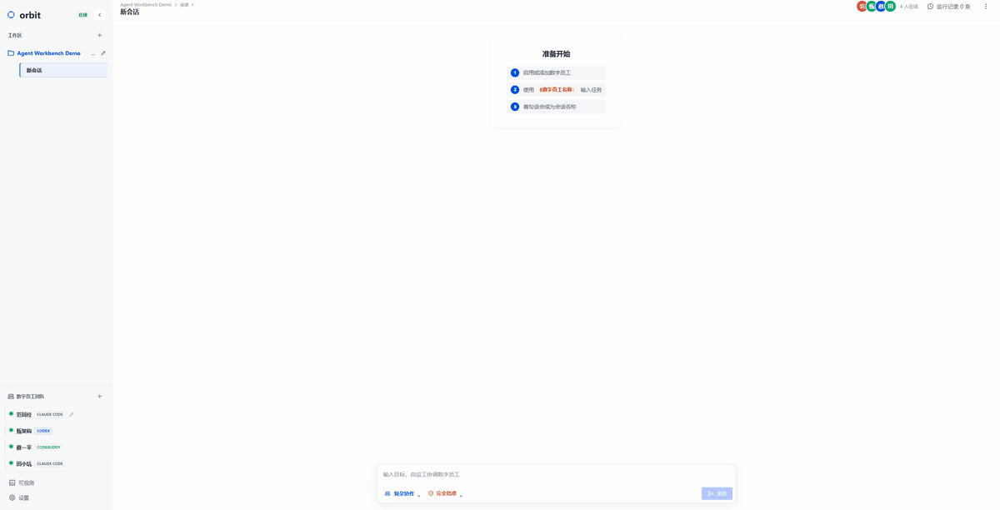

↗
一个目标，多位专家
在同一条会话里，让产品、架构、开发和测试按你的节奏接力。
看它怎么协作 →Orbit 不是又一个聊天窗口。它是一个把目标、分工、审批和结果放在一起的控制面，让 Agent 的能力变成一支真正可调度的团队。
Orbit 把复杂性放在该放的位置：运行时留在适配器，状态留在本地，会话留在你手里。
在同一条会话里，让产品、架构、开发和测试按你的节奏接力。
看它怎么协作 →每一步都可见、可暂停、可恢复。你知道谁在做什么，也知道下一步是什么。
了解可回看工作流 →工作区、消息、会话与附件保存在本机。你的工作不需要绕远路。
查看数据目录 ↗不是把任务丢给黑盒，而是让每一段工作都有位置、有负责人、有回声。
需要确认时再确认，需要暂停时就暂停。Orbit 会把可恢复的状态留在本地，而不是让一次中断变成一次重来。
阅读架构原则 ↗一次真实的复杂协作运行：拆解、并行、核验，最后在同一个会话里收敛。

需要 Node.js 22 或更高版本，以及至少一个已登录的运行时。
$ npm install -g @kevinforge/orbit
$ orbitlocalhost:4317